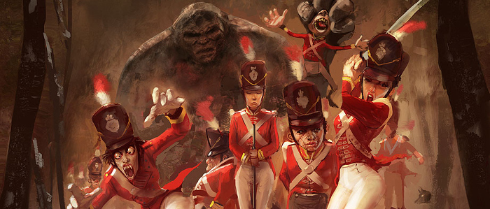

💖 Terry Pratchett et Akemi
J’ai été désolée d’apprendre aujourd’hui la mort de Terry Pratchett, un auteur de fantasy que j’aime beaucoup. J’ai donc décidé de lui rendre hommage dans un article racontant comment je l’ai découvert.
Ma découverte des Annales du Disque-Monde, ou comment un hasard peut changer une vie
Ce devait être un lundi ou un mardi, journées généralement dédiées aux courses parce qu’il y a moins de monde dans les centres commerciaux. Je flânais avec mon Précieux dans l’espace culturel, rayon fantasy/science-fiction, à la recherche d’un livre que je pourrais débuter, confortablement installée dans un de ces fauteuils en cuir disposés le long des fenêtres du magasin.

Je regardais les noms des auteurs, certains familiers, d’autres inconnus, quand je remarquais une collection importante écrite par un certain Terry Pratchett. Je sortis un livre de cette collection au hasard et en contemplais la couverture, émerveillée. C’était Mortimer (chez Pocket) et je trouvais l’illustration magnifique, hilarante et très inspirante.
Avec mon Précieux, nous l’avons feuilleté. Sur la première page, une courte biographie de l’auteur nous apprit qu’il était très connu pour son humour et son travail titanesque en matière de fantasy. Les Annales du Disque-Monde sont son œuvre majeure et elles ont été traduites dans le monde entier. Cela nous donna aussitôt envie d’en savoir plus.
Les premières lignes nous conquirent immédiatement. L’humour était bien là, parfaitement dosé et impeccablement située pour nous introduire l’univers dans lequel on venait naïvement de plonger. En effet, une fois dedans, on en sort plus. On a été incapable de résister.
Mon Précieux a commencé la lecture de Mortimer et je me suis précipitée dans le rayon pour prendre Le régiment monstrueux (parce que c’était le plus gros de la collection et que je voulais me régaler :p).
C’est ainsi que notre flânerie dans le rayon fantasy de l’espace culturel du centre commercial nous a valu de découvrir Terry Pratchett et de tomber amoureux de son œuvre. Cela nous a même un peu changé la vie puisque nous venions de faire la connaissance d’un monument de la fantasy qui a considérablement enrichie notre culture. Et combien nous étions fiers de connaître la réponse lorsque, par un heureux hasard, la question posée à l’intérieur de l’emballage du petit fromage carré que l’on déguste à l’apéritif en famille portait sur la Grande A’Tuin.
Ma lecture du Régiment monstrueux
Premier roman des Annales du Disque-Monde que j’ai lu. Je l’ai trouvé tout bonnement excellent. Comment Terry a-t-il pu écrire sur la guerre avec autant d’humour, de réalisme et d’humour ? Je l’ai déjà dit ? Ah bon ? C’est parce que cette histoire en est gorgée !
En plus de passer des messages poignants sur les conflits politiques, le sexisme et l’autorité, il nous envoie sur le front avec une équipe de bras cassés pire les uns que les autres ! Sans trop vouloir vous en révéler, un régiment composé d’une femme déguisée en homme, d’un vampire accroc au café, d’un troll, et j’en passe; cela n’augure rien de bon… pour la guerre en tout cas. Pour nous, c’est un véritable plaisir !
Mon aventure sur le dos de la Grande A’Tuin
Ma lecture des œuvres de Terry Pratchett ne s’est pas arrêtée là. J’ai lu Mortimer, évidemment, et j’en ai été ravie ! La Mort est vraiment exceptionnel (au masculin, eh oui, parce que la Mort est un mâle ^^), et écrire qu’il a besoin d’un apprenti pour pouvoir prendre des vacances relève tout simplement du génie !
J’ai poursuivi l’aventure en attaquant Le huitième sortilège et là, je peux vous dire que je n’ai pas été déçue du voyage ! Deuxfleurs, le Bagage, Ankh-Morpork et surtout Rincevent… Tout est génial.
Rincevent est un mage de l’Université Invisible et c’est le personnage le plus sympathique que j’ai eu l’occasion de découvrir dans toutes mes lectures ! Ce n’est pas peu dire. Il est attachant, idiot (il a écrit « maje » sur son chapeau, avec la faute d’orthographe !), très drôle et parfaitement incompétent. Sans lui, l’histoire ne tiendrait pas vraiment debout. Et pour mon plus grand bonheur, c’est un personnage récurrent des Annales du Disque-Monde. J’ai eu le plaisir de le retrouver dans Le dernier continent, Eric (que j’ai tout de même moins apprécié que les autres), La huitième couleur et Sourcellerie. J’ai aussi lu La huitième fille, et on peut dire que Mémé Ciredutemps est pas mal non plus dans son genre.
Pour l’instant, je n’en ai pas lu davantage, mais je sais qu’il m’en reste énormément à découvrir et que Terry Pratchett ne s’est pas contenté d’écrire Les Annales du Disque-Monde. Je vais donc me faire une joie de découvrir ses autres œuvres et je vous conseille d’en faire autant.
Merci Terry d’avoir existé et d’avoir eu l’idée d’écrire !